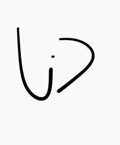

Trade Mark Journal No.2025/015 11 April 2025
UK00004181548 31 March 2025 (25)

- Class 25
- T-shirts; Hoodies; Shirts; Jerseys [clothing]; Jackets [clothing]; Sweatshirts; Short-sleeved T-shirts; Shorts [clothing]; Headbands [clothing]; Headbands for clothing; Wristbands [clothing]; Tee-shirts; Jackets (Stuff -) [clothing]; Stuff jackets [clothing]; Clothing; Long-sleeved shirts; Jackets being sports clothing; Turtleneck shirts; Denims [clothing]; Kerchiefs [clothing]; Camouflage shirts; Playsuits [clothing]; Short-sleeved shirts; Knitwear [clothing]; Capes (clothing); Dress shirts; Embroidered clothing; Quilted jackets [clothing]; Collars [clothing]; Tops [clothing]; Paper hats for use as clothing items; Hoods [clothing]; Shirts for suits; Corduroy shirts; Bottoms [clothing]; Paper hats [clothing]; Hats (Paper -) [clothing]; Short-sleeve shirts; Maternity shirts; Gloves as clothing; Visors [clothing]; Gloves [clothing]; Hooded sweat shirts; Printed t-shirts; Party hats [clothing]; Hooded sweatshirts; Cowls [clothing]; Sports shirts; Yoga shirts; Knitted clothing; Cashmere clothing; Woolen clothing; Casual shirts; Clothing layettes; Knit shirts; Sweat shirts; Layettes [clothing]; Clothes; Gabardines [clothing]; Mitts [clothing]; Open-necked shirts; Chaps (clothing); Handwarmers [clothing]; Oilskins [clothing]; Mufflers [clothing]; Nappy pants [clothing]; Garments for protecting clothing; Ready-to-wear clothing; Furs [clothing]; Belts [clothing]; Belts for clothing; Bandeaux [clothing]; Woven shirts; Gloves for apparel; Windproof clothing; Silk clothing; Veils [clothing]; Collared shirts; Sport shirts; Boas [clothing]; Moisture-wicking sports shirts; Trunks being clothing; Soccer shirts; Linen clothing; Muffs [clothing]; Foulards [clothing articles]; Clothing for leisure wear; Pockets for clothing; Golf clothing, other than gloves; Tank-tops; Men's clothing; Fabric belts [clothing]; Hunting shirts; Jogging bottoms [clothing]; Denim jackets; Polo shirts; Casual clothing; Clothing for wear in wrestling games; Clothing for babies; Plush clothing; Corsets [clothing, foundation garments]; Clothing for sports; Sports clothing; Maternity clothing; Leather clothing; Clothing of leather; Leather (Clothing of -); Wraps [clothing]; Sleep shirts; Sleeved jackets; Tennis shirts; Drawers [clothing]; Drawers as clothing; Sweaters; Mock turtleneck shirts; Braces for clothing; Tracksuit bottoms; Jogging bottoms; Tracksuit tops; Jogging pants; Jogging tops; Padded shirts for athletic use; Bib shorts; Sweatpants; Pajama bottoms; Leggings [trousers]; Sleeveless jerseys; Sleeveless jackets; Fleece shorts; Sports shirts with short sleeves; Baselayer bottoms; Trousers shorts; Jogging outfits; Jeans; Golf shirts; Denim pants; Shirt fronts; Gym shorts; Boy shorts [underwear]; Moisture-wicking sports pants; V-neck sweaters; Blue jeans; Button-front aloha shirts; Football shirts; Vest tops; Sports pants; Sleeveless pullovers; Men's and women's jackets, coats, trousers, vests; Camouflage pants; Turtleneck tops; Pants; Jogging shoes; Corduroy pants; Padded shorts for athletic use; Button down shirts; Padded pants for athletic use; Fishing shirts; Shorts; Shirts and slips; Yoga bottoms; Tracksuits; Bib tights; Turtleneck pullovers; Dress pants; Walking shorts; Sweat bottoms; Hooded tops; Fleece tops; Men's dress socks; Cycling pants; Pique shirts; Hooded pullovers; Jogging sets [clothing]; Denim jeans; Fleece jackets; Sweat shorts; Capri pants; Sweatshorts; Night shirts; Shirt yokes; Yokes (Shirt -); Sneakers; Jogging suits; Polo knit tops; Turtleneck sweaters; Leather pants; Weatherproof pants; Yoga pants; Shoes for leisurewear; Sweat pants; Rugby shirts; Swim shorts; Bib overalls for hunting; Camouflage jackets; Stretch pants; Padded jackets; Baselayer tops; Shoes for casual wear.
Unity In Diversity